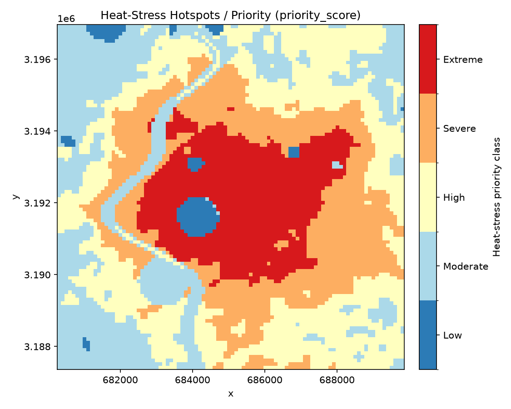
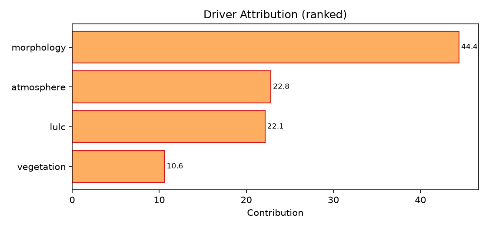
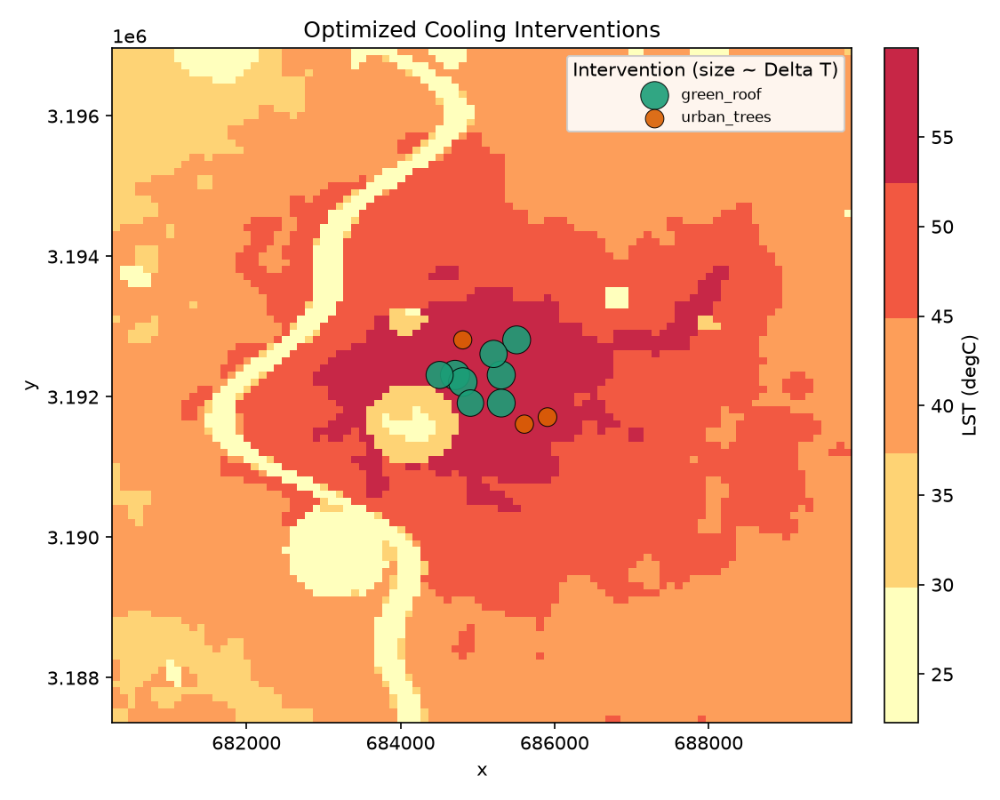

*ISRO Bharatiya Antariksh Hackathon 2026 — Problem Statement 1*
Generated: 2026-06-22 12:14 UTC
Mode: synthetic | Window: 2024-03-01 -> 2024-05-31 | Resolution: 100.0 m
This report assembles the four PS-1 deliverables: (1) heat-stress hotspot map + statistics, (2) ranked driver attribution, (3) a spatially-validated AI/ML model with physics-consistency, and (4) an optimized cooling-intervention strategy with per-site estimated temperature reduction.
Priority-class distribution (5-class legend):
| Class | Range | Share |
|---|---|---|
| Low | 0-20 | 2.2% |
| Moderate | 20-40 | 25.0% |
| High | 40-60 | 30.2% |
| Severe | 60-80 | 24.6% |
| Extreme | 80-100 | 18.1% |

Ranked %-contribution of the four PS-1 driver families to LST, from mean(|SHAP|) on the trained model (cross-checked by variance partitioning where available). No driver claim is made without >=2 agreeing methods.
| Rank | Driver family | Contribution |
|---|---|---|
| 1 | morphology | 44.4% |
| 2 | atmosphere | 22.8% |
| 3 | lulc | 22.1% |
| 4 | vegetation | 10.6% |
Leading driver family: morphology.

Headline validation uses spatial block cross-validation (not leaky random CV); the full metric panel is reported as mean across folds.
| Metric | Value |
|---|---|
| RMSE (degC) | 0.751 |
| MAE (degC) | 0.578 |
| Bias (degC) | -0.024 |
| ubRMSE (degC) | 0.744 |
| R^2 | 0.987 |
| NSE | 0.987 |
| Lin's CCC | 0.994 |
| KGE | 0.986 |
Literature anchor (Extra-Trees LST): R^2 ~= 0.908; RMSE ~= 0.745 degC.
Physics-consistency checks:
A lazy-greedy submodular optimizer ((1 - 1/e) ~= 0.63 guarantee) selects a ranked portfolio of typed, placed interventions under budget / area / equity (population x HVI) constraints. ΔT is the estimated surface temperature reduction per site.
| # | Type | Location (x, y) | Area (m^2) | Cost | Delta T (degC) |
|---|---|---|---|---|---|
| 1 | green_roof | 684708, 3192312 | 10,000 | 1,200,000 | 8.035 |
| 2 | green_roof | 685308, 3192312 | 10,000 | 1,200,000 | 7.254 |
| 3 | green_roof | 685308, 3191912 | 10,000 | 1,200,000 | 7.124 |
| 4 | green_roof | 685508, 3192812 | 10,000 | 1,200,000 | 7.182 |
| 5 | green_roof | 685208, 3192612 | 10,000 | 1,200,000 | 6.827 |
| 6 | green_roof | 684808, 3192212 | 10,000 | 1,200,000 | 7.581 |
| 7 | green_roof | 684908, 3191912 | 10,000 | 1,200,000 | 6.38 |
| 8 | green_roof | 684508, 3192312 | 10,000 | 1,200,000 | 6.76 |
| 9 | urban_trees | 685908, 3191712 | 10,000 | 120,000 | 2.614 |
| 10 | urban_trees | 684808, 3192812 | 10,000 | 120,000 | 2.419 |
| 11 | urban_trees | 685608, 3191612 | 10,000 | 120,000 | 2.451 |
Portfolio totals: 11 sites selected; city-wide mean cooling 0.03 degC; population-heat-exposure reduction 0.4%; total cost 9,960,000.

The pipeline is backed by a 35-entry cross-verification matrix (research/09) — every source both fills others' gaps and is itself verified by an independent source.
Honest-confidence layers present: 1 uncertainty + 0 agreement layers (every deliverable map ships with a paired uncertainty map).
Mean LST 1-sigma fusion uncertainty: 0.915 degC.
Robustness: 35 cross-verifying entries (17 datasets + 18 methods) from the research/09 matrix; 18 active in this run (>=30 target MET). 1 uncertainty + 0 agreement layers present; 63 canonical driver layers populated.
*Generated by urbanheat (physics-informed, multi-satellite geospatial AI/ML for urban heat). Synthetic-mode figures are illustrative of the pipeline, not a substitute for calibrated data.*